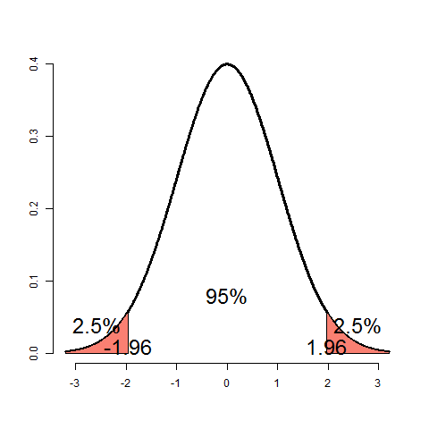
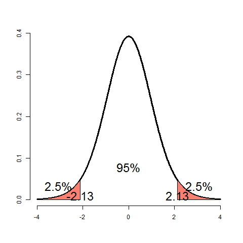
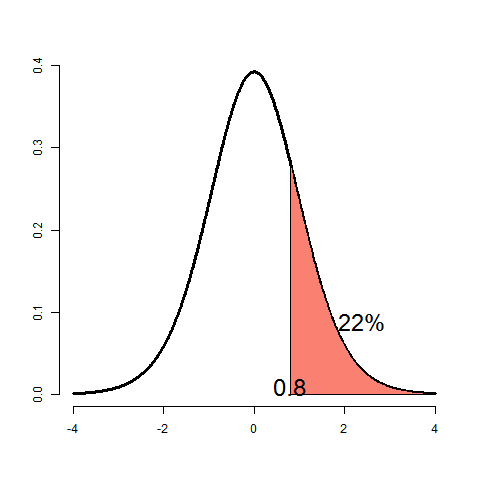

BCNotes.org
Table of Contents
1 Week 1 Notes
1.1 Hypothesis Tests
1.1.1 Standard Normal R Code
qnorm(.95) xval <- seq(-3.2, 3.2, length = 1000) yval<- dnorm(xval) plot(xval, yval, type = "l", axes = TRUE, frame = FALSE, lwd = 3, xlab = "", ylab = "") x <- seq(qnorm(.95), 3.2, length = 100) polygon(c(x, rev(x)),c(dnorm(x), rep(0, length(x))), col = "salmon") text(mean(x), mean(dnorm(x))+.02, "5%", cex = 2) text(qnorm(.95), .01, "1.645", cex = 2) plot(xval, yval, type = "l", axes = TRUE, frame = FALSE, lwd = 3, xlab = "", ylab = "") x <- seq(qnorm(.975), 3.2, length = 100) polygon(c(x, rev(x)),c(dnorm(x), rep(0, length(x))), col = "salmon") text(mean(x), mean(dnorm(x))+.02, "2.5%", cex = 2) text(qnorm(.975), .01, "1.96", cex = 2) x <- seq(-3.2, qnorm(.025),length = 100) polygon(c(x, rev(x)),c(dnorm(x), rep(0, length(x))), col = "salmon") text(mean(x), mean(dnorm(x))+.02, "2.5%", cex = 2) text(qnorm(.025), .01, "-1.96", cex = 2) text(0, dnorm(0) / 5, "95%", cex = 2)

1.1.2 General Rules of Hypothesis Tests
- The \(Z\) test for \(H_0: /mu = /mu_0\) versus
- H1: \(\mu <\mu_0\)
- H2: \(\mu \ne \mu_0\)
- H3: \(\mu > \mu_0\)
- Test statistic \(TS = \frac{\bar{X} -\mu_0}{S/\sqrt{n}}\)
- Reject the null hypothesis when
- \(H_1 : TS \le -Z_{1-\alpha}\)
- \(H_2: |TS| \ge Z_{1-\alpha/2}\)
- \(H_3: TS \ge Z_{1-\alpha}\)
We want an α percent chance of rejecting the null hypothesis falsely. We look at α/2 because we want an overall rate of 5%.
xval <- seq(-4, 4, length = 1000) yval<- dt(xval, 15) plot(xval, yval, type = "l", axes = TRUE, frame = FALSE, lwd = 3, xlab = "", ylab = "") x <- seq(qt(.975, 15), 4, length = 100) polygon(c(x, rev(x)),c(dt(x, 15), rep(0, length(x))), col = "salmon") text(mean(x), mean(dt(x, 15))+.02, "2.5%", cex = 2) text(qt(.975, 15), .01, "2.13", cex = 2) x <- seq(-4, qt(.025, 15),length = 100) polygon(c(x, rev(x)),c(dt(x, 15), rep(0, length(x))), col = "salmon") text(mean(x), mean(dt(x, 15))+.02, "2.5%", cex = 2) text(qt(.025, 15), .01, "-2.13", cex = 2) text(0, dt(0, 15) / 5, "95%", cex = 2)

Looking for greater than or less than critical values (overall rate is 5%)
We have forced the type I error rate to be small. We have not fixed anything to do with the type II error. We say failed to reject H0 rather than accepting H0. Small sample size can lead to variability in the mean - we did not get enough data to reject. Classic phrase: absence of evidence is not evidence of absence. Statistical significance is not scientific significance. A big sample size may lead to rejection of the null hypothesis - but the overall difference is meaningless.
- The region of TS values for which you would reject the null is
called the rejection region.
*** Two sides tests
- Z test required assumption of CLT
- If n is small then a Gosset T test is performed
- Power is used a lot to calculate sample sizes using guesses of standard errors and level of effect. This is done prior to experiment.
- Consider example n=16 then:
Consider our example again. Suppose that \(n= 16\) (rather than \(100\)). Then consider that $$ .05 = P\left(\frac{\bar X - 30}{s / \sqrt{16}} \geq t_{1-\alpha, 15} ~|~ \mu = 30 \right) $$
- s=10
- n= 16
- \bar{X} = 32
So that our test statistic is now \(\sqrt{16}(32 - 30) / 10 = 0.8\), while the critical value is \(t_{1-\alpha, 15} = 1.75\). We now fail to reject.
we went from 100 to 16 and the t-value went up so we are not surprised we did not reject.
- Suppose we want to test if \(\mu \ne 30\) (does not make sense as we proposed the problem).
- Then
- we fail to reject (0.8 < 2.13).
# add source code for t-tests. pt(.8, 15, lower.tail=FALSE) xval <- seq(-4, 4, length = 1000) yval<- dt(xval, 15) plot(xval, yval, type = "l", axes = TRUE, frame = FALSE, lwd = 3, xlab = "", ylab = "") x <- seq(.8, 4, length = 100) polygon(c(x, rev(x)),c(dt(x, 15), rep(0, length(x))), col = "salmon") text(mean(x), mean(dt(x, 15))+.02, "22%", cex = 2) text(0.8, .01, "0.8", cex = 2)

1.1.3 Connections with confidence intervals and P Values
- test H0: μ = μ0 versus Ha: μ ≠ \m0
- range of possible values that we do not reject H0 is confidence interval
- consider do not reject \(H_0\)
$$\left| \frac{\bar X - \mu_0}{s /\sqrt{n}} \right| \leq t_{1-\alpha/2, n-1}$$
impying
$$ \left|\bar X - \mu_0 \right| \leq t_{1-\alpha/2, n-1} s /\sqrt{n} $$implying
$$ \bar X - t_{1-\alpha/2, n-1} s /\sqrt{n} < \mu_0 < \bar X + t_{1-\alpha/2, n-1} s /\sqrt{n} $$μ0 lies inside the confidence interval.
Several uses:
- Conveys more information than hypothesis tests
- Conveys the range of values that are supported by the data
when can report confidence interval
- P-values
- the smallest α for which you still reject the null hypothesis is the attained significance level.
- P-Value is the probability under the null hypothesis is the probability that the value or more extreme under the null hypothesis.
- Some level people claim it is measure of evidence. If P-value is small than either the null is true and we have observed something that is rare, or the null hypothesis is FALSE.
pt(.8, 15, lower.tail=FALSE) xval <- seq(-4, 4, length = 1000) yval<- dt(xval, 15) plot(xval, yval, type = "l", axes = TRUE, frame = FALSE, lwd = 3, xlab = "", ylab = "") x <- seq(.8, 4, length = 100) polygon(c(x, rev(x)),c(dt(x, 15), rep(0, length(x))), col = "salmon") text(mean(x), mean(dt(x, 15))+.02, "22%", cex = 2) text(0.8, .01, "0.8", cex = 2) pt(0.8, 15, lower.tail=FALSE)
- By reporting P-value the reader can perform hypothesis tests he or she choses.
- 2-sided hypothesis is to double smaller of 2-sided P-values
- Don't just report P-values give confidence intervals
- P-Values Limitations
- P-Values only consider significane unlike CIs
- P-values only measure evidence for NULL not the Alternative
- Frequently misinterpretted. /Prob. of attaining the value or more extreme in favor of the alternative hypothesis when the calculation is done under the NULL hypothesis./
1.2 POWER
1.2.1 What is it
- Probability of rejecting NULL when it is false labeled β
- 1- Β is Power
- Consider RDI example
- note the function is specific to μa
- NOTE as μa approaches 30, the power approaches α.
- YOU have to know the value under the alternative you want to plug in
1.2.2 How to calculate it
- Assume that n is large and the we know α
- notice s is replaced by σ
- no longer a z-statistic because we are considering an alternative hypothesis.
- Adding and subtracting the mean under the alternative converts it to z-statistic.
- Suppose we want to detect increase of 2 events per hour above 30. Assume normality and the sample will have σ = 4. Sample size is 16:
- \(Z_{1-\alpha} = 1.645\) and
\(\frac{\mu_a - 30}{\sigma /\sqrt{n}} = 2 / (4 /\sqrt{16}) = 2\)
- \(P(Z > 1.645 - 2) = P(Z > -0.355) = 64\%\)
- only gets better as difference gets better than 2.
- Given Power what sample size?
- Suppose we want power of 0.8
- set \(z_{1-\alpha} - \frac{\mu_a - 30}{\sigma /\sqrt{n}} = z_{0.20}\) and solve for \(n\)
- done at phase of study design
- The calculation is similiar when μ < μ0
- when μ ≠ \ m0
- pick 1-sided but use α/2 it is right enough it omits some of the probability (that is small enough to be irrelivant).
- Power goes up as α gets larger - under court of law example the odds of convicting an innocent person goes up as the probability of convicting a guilty person goes up.
- difference between NULL and ALTERNATE gets big - power goes up
- sample size goes up, your power goes up
1.2.3 T-test
- Power for T-test is more complicated.
- the power is:
$$ P\left(\frac{\bar X - 30}{S /\sqrt{n}} > t_{1-\alpha, n-1}
|\mu = \mu_a \right) $$ - Notice that this is equal to:
- Continued - how can do with tools we have:
- which equal to:
where Z and Χ2n-1 are independent standard normal and chi-squared random variables
- Easy to solve using Monte Carlo
1.2.4 Using Monte Carlo to do Power
- Simulate pairs of Z and Χ2 and check which is bigger. If %1's would be approximate probability.
nosim <- 100000 n <- 16 sigma <- 4 mu0 <- 30 mua <- 32 z <- rnorm(nosim) xsq <- rchisq(nosim, df=15) t <- qt(0.95,15) mean(z+sqrt(n) * (mua - mu0)/sigma > t/sqrt(n-1) * sqrt(xsq))
Returns a vector of 1 (TRUE) and 0 (FALSE). 1 every time left is bigger than right side of equation. Mean is the proportion (60%) accuracy: 1/sqrt(100000)
0.60762
x <- power.t.test(n=16, delta=2, sd=4, type="one.sample", alt="one.sided") print(unlist(x))
[1] 0.60485
n delta
"16" "2"
sd sig.level
"4" "0.05"
power alternative
"0.604032870954103" "one.sided"
method
"One-sample t test power calculation"
- Notice that in both cases we gave a TRUE mean and standard deviation - but we only needed to provided the delta (difference in the means divided by the standard deviation).
1.3 Hypothesis Testing for comparing 2 means
1.3.1 Matched Data
diff <- test2 - test1 n <- sum(!is.na(diff)) #49 mean(diff) #2.88 sd(diff) #7.61 testStat <- sqrt(n) * mean(diff) / sd(diff) #2.65 # below works out to be 0.01 2 * pt(abs(testStat), n -1, lower.tail = FALSE) ##uses the R function t.test(diff)
- Discussion of matched data
- Regression to the mean (or mediocrity)
1.4 Two Sample Tests
1.4.1 Matched Data
- comparing 2 groups determine if data are paired.
- observations on same subject
- compare when match case to control
- when paired take the difference of the observations.
- NULL difference is 0
- Alternative is not 0
- Test statistic:
- \(\mu_d0\) is the value under the NULL (typically 0)
- statistic is a $tnd-1 or \(z\) statistic
- \(n_d\) is the number of pairs of observations
- $SSd is the standard deviation of difference of the pairs
- Example from 2 exams (on same students) and testing if there is a difference between the means of the other exams?
- plot the variables (test1 and test2)
- mean difference plot (Bland and Altman)
diff <- test1 - test2 n <- sum(!is.na(diff)) mean(diff) sd(diff) testStat <- sqrt(n) * mean(diff)/sd(diff) 2 * pt(abs(testStat), n-1, lower.tail=FALSE) #or t.test(diff) # p = 0.01 so reject NULL
- Comments
- Ratios more relevant than pair-wise differences?
- if yes, then do the test on the log-observations
- when doing plot of var1 and var2 and mean difference plot (Bland and Altman plot)
1.4.2 Regression to the mean
- Francis Galton saw that for matched data high initial observations tend to lead to low second observations.
- sons of tall dads, tend to be a little shorts
- dads of tall sons tend to be a little shorter
- RTM in detail - normalize both scales (so that their means are both 0 and the sd is 1)
- The best fitting line is through average and has slope:
and passes through the point where \(x=mean(Test1) y=mean(Test2)\).
- It also (because we normalized) passes though the origin (0,0) and has a slope equal to the \(Cor(Test1, Test2)\)
- Cor(Test1, Test2) <1 in general
- This will be shrunk towards a horizontal line, our expected
normalized test score for Test2 can be calculated by mutliplying
Test 1 (normalized) times the Cor(Test1, Test2).
- Line adjusts for the the regression to the mean for Test 2 (conditioned on Test 1).
- for Test 1 conditioned on Test 2 we need to multiply Test 2 by $Cor(Test1, Test2)-1
- the first case the line is shrunk towards horizontal line, the the second case the line is shrunk towards the vertical line
- Ideal examiner would have little difference between id. line and fitted regression
- More unrelated the exam scores are more pronounced regression to the mean
1.4.3 Two Independent groups
- the extention to 2 independent groups
- \(H_0 : \mu_1=\mu_2 vs H_a \mu_1 \ne \mu_2\) or other alternatives (> or <)
- Assuming common variance
$$ ORG-LIST-END-MARKER \frac{\bar X - \bar Y}{S_p \sqrt{\frac{1}{n_x} + \frac{1}{n_y}}} $$ this follows a \(t_{n_x + n_y -2}\) distribution under the null hypothesis with the t-assumptions
- If assuming common variance is questionable
follows normal distribution for large values of \(n_x\) and \(n_y\). Follows (approx) Student's T if the \(X_i\) and \(Y_i\) are normally distributed.
- Appropriate degrees of freedom are
- fairly accurate
- not a lot of intuition as to why it works this way.
- ok not an integer
Final Comments
- connection between hypothesis test and confidence interval holds
- don't test for equality of means by comparing confidence intervals (definately will reject if they do not overlap, but sometimes overlapping CIs will have rejected means)
- abuse of paired data
- in general not as powerful
- Example calculation
- randomly assign students to two teaching modules
- same test
Group N Mean Exam Score SD Exam Score Module1 50 86.9 6.07 Module2 50 89.8 6.06 - pooled SD 6.065 (sqrt of average variances!)
- test statistic:
- look over review notes on formal tests of equality of variances
- CAFO IS NOT A FAN
- ASSUME NORMALITY IN F-distributions
- Bootstrap resampling (not F-distribution) for ratio of CI for the ratio between variances
- if not assume not-equality of variances
- Suppose you have equal numbers of obs. for 2 groups
- if data are matched (truley), then
if you ignore matching… $$ \sqrt{\frac{\sigma_y^2}{n} + \frac{\sigma_x^2}{n}} $$
- in many cases by ignoring correlation you are inflating standard error. In a way you are ignoring information.
- why not pair all experiments? Sometimes things don't lend themselves to paired design - learning effects on tests etc.
- crossover designs (some take exam1 then exam2 and some exam2 then exam1)